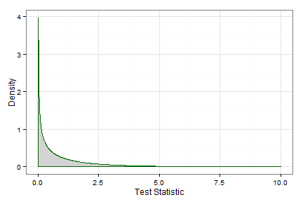

This is designed to help with problem 2 of Homework 8. I'm assuming that they know that the MLE of a Gamma distribution is \(\hat{\beta} = \frac{\bar{x}}{\alpha}\).
Also, I'd do part (a) by finding the ratio of the likelihood under the null to the likelihood for all \(\beta\)
\( \lambda (x) = \frac{sup(\beta = \beta_0) L(\beta | \textbf{x}, \alpha)}{sup(all \, \beta) L(\beta | \textbf{x}, \alpha)} \)
What is the likelihood under the null hypothesis?
Recall that there is only one possible value of \(\beta\) under the null.
Under the null, you just plug in \(\beta_0\) for \(\beta\) in the likelihood.
What is the likelihood under the alternative
Submit and Compare ClearFind the ratio of these two, showing that it is equal to
\( (\frac{\hat{\beta}}{\beta_0})^{n\alpha} \times exp(-\sum_{i=1}^{n} (\frac{1}{\beta_0} - \frac{1}{\hat{\beta}})) \)
For a large sample, what distribution does this test statistic follow?
What happens to LRTs as \(n \rightarrow \inf\)?
See Theorem (whatever Theorem it is)
How many constraints are there in your hypotheses?
What is the null hypothesis?
Um...
They assumed that \(\beta = 12.2\)
Round both to one decimal place.
For \(n = 1\), \(\bar{x}\) is just the one observation.
A $\chi2(1) distribution is plotted below. Explain how you would find a p-value.
library(ggplot2)
qplot(rchisq(10000, 1), geom = "density", colour = I("green"), fill = I("grey"), alpha = I(.5)) +
theme_bw() +
labs(x = "Test Statistic")

Submit and Compare Clear